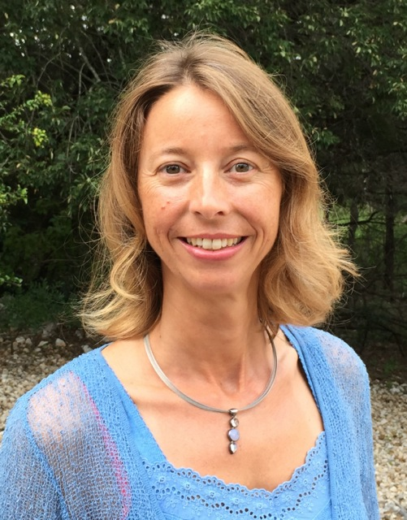

|
isabelle.integmed@icloud.com 512-879-6555 (no text messages) |
Isabelle Integrative Medicine PLLC
WELCOME ABOUT SERVICES PEDIATRICS APPOINTMENTS FAQ Isabelle Chen-Angliker LAc, MAcOM, Dipl.OM (NCCAOM), MD (Switzerland) Isabelle grew up in Switzerland where she earned her medical degree from the University of Zuerich in 1996 and completed her residency in general pediatrics. During her medical training, Isabelle sought holistic and integrative practices to complement her knowledge of Swiss traditional herbal remedies, especially the healing qualities of alpine herbs she acquired from her grandmother. When Isabelle moved to Austin, she began admiring AOMA while taking her daughter to Heartsong Music next door and dreaming of studying Asian medicine herself. Soon after, she went through an intensive Hatha Yoga teacher training, which served her as a "baby step" before entering the AOMA graduate program. She also began searching for alternative treatments for her young son with ADHD and Asperger's Syndrome, which inspired her to finally enroll in, and complete AOMA's Master of Acupuncture and Integrative Medicine program.  In addition to her extensive training in acupuncture, Chinese herbology and Western medicine, Isabelle is also trained in Asian Bodywork with an emphasis on Tuina and Medical Qigong. An aspect of the integrative and holistic perspective of Chinese medicine on healing that especially appeals to Isabelle is its individualized treatment approach tailored to the needs of clients, and its applications and modifications involving art and intuition. Her goal is to inspire her clients to embark on their own journeys seeking health and happiness, to share her passions for healthy food, movement, and nature, and to encourage each client's self-healing potential. Isabelle's passion is to treat clients using a holistic approach of Traditional Chinese Medicine including acupuncture, Asian Bodywork, Chinese herbal prescriptions, nutritional and lifestyle counseling, combined with the understanding of Western medicine diagnoses and treatment. Her special interests are insomnia, psycho-emotional disorders, PTSD, ADHD/ADD, pain management, pediatrics and women's health. Outside of her office, Isabelle enjoys spending quality time with her two children, dancing, swimming, doing yoga, hiking and gardening. Isabelle is a native German/Swiss German speaker, fluent in English and Italian as well as proficient in French and Spanish. She is currently learning Mandarin Chinese. |